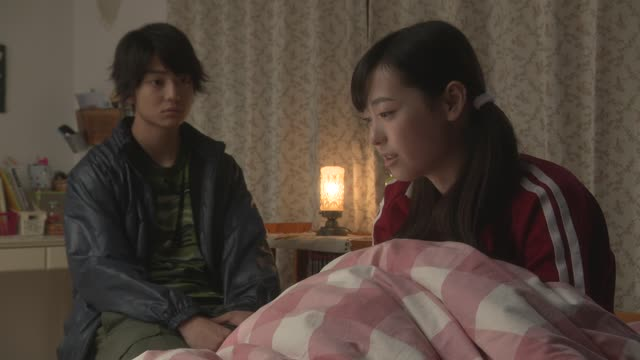

が

Source unknown
桜が満開です
"The cherry blossoms are in full bloom."
が marks who or what does something or is in some state, when that's new information. It goes right after the noun: 桜 + が + 満開です.
On this card, you notice something new: the blossoms are out. The sentence answers "What's happening?", and が presents 桜 as the news.
With は (桜は満開です) it would mean "as for the cherry blossoms, they're in full bloom": talking about blossoms you were already discussing, not announcing them.
Examples
Someone at an exhibition asks who made this illustration.
私が描きました。
"I drew it." (me, the one standing here)
You look out the window and notice something.
あ、雨が降ってる！
"Oh, it's raining!"
A friend asks what kind of animals you like.
猫が好き。
"I like cats."
は or が?
私はセブです。
Introducing yourself. "Me? I'm Seb."
私がセブです。
A client looks around asking "which one is Seb?" You raise your hand: "I'm Seb."
Sentence mining

YouTube · video
お腹がぺこぺこです。
"I'm starving."
Literally "my stomach is empty". が marks what's empty: the stomach.

YouTube · video
なんか、建物がめちゃめちゃ高い！
"Whoa, the buildings are super tall!"
Just noticed it. が points at the thing: the buildings.

Shirokuma Cafe · Season 1, Episode 2
情緒がないなぁ
"No sense of atmosphere."
が marks what's missing: 情緒 is the thing that isn't there.

Shirokuma Cafe · Season 1, Episode 1
うん人手が足りなくて
"Yeah, they're short on staff."
が marks what isn't enough: hands, staff.

Pokémon: Indigo League · Episode 2
これがわたしたちの手配写真。
"THIS is our wanted poster."
This one, right here. Like 私が描きました, が points a finger. With これは it would just be "this is our poster".

YouTube · video
けっこう短めの方が好きです。
"I like it on the shorter side."
Likes take が, like 猫が好き. Here the thing liked is 短めの方 (the shorter option).

Good Morning Call · Episode 1
一緒に住む カップルがいました
"There was a couple living together."
カップル + が: が marks who was there.
The Journalist · Episode 5
家族がいました
"He had a family."
家族 ("family") + が + いました: が marks who existed.
Reference
A Dictionary of Basic Japanese Grammar
Entry "ga¹" (が) · pp. 118–120